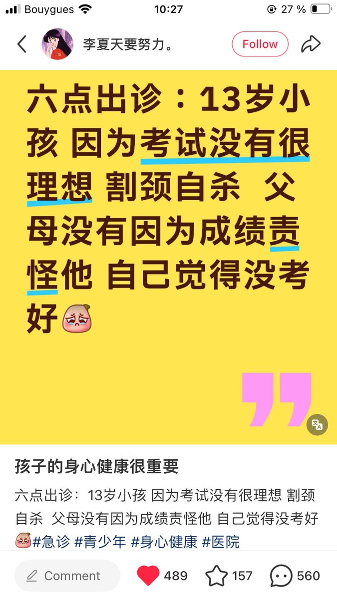
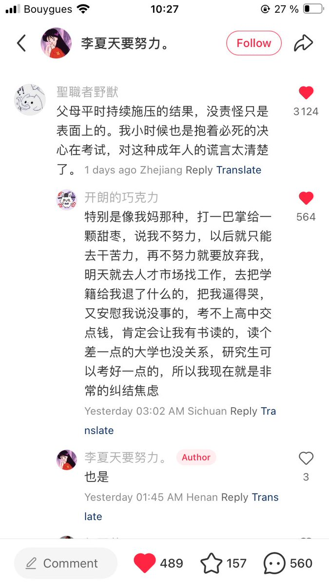
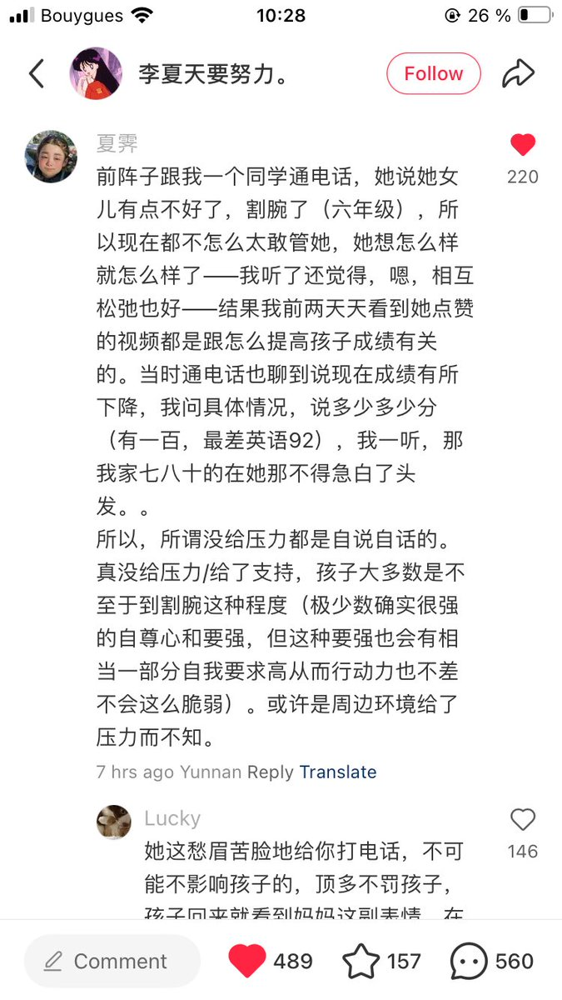

@garrulous_abyss 哇呜呜呜…暴风哭泣…
甚至自己还是从来不以考试见长的…当时自己喝氯化钡的原因之一也是如此…
但是自己甚至都已经在记忆里找不到它们在什么时候给自己怎样上过压力了，好像一切都只是自己自愿的…在太久之前就被自己内化掉了的…

甚至自己还是从来不以考试见长的…当时自己喝氯化钡的原因之一也是如此…
但是自己甚至都已经在记忆里找不到它们在什么时候给自己怎样上过压力了，好像一切都只是自己自愿的…在太久之前就被自己内化掉了的…



我一看图一也知道，父母说“平时没给压力”，只是托词。大概率是那种，平时考全班第一，但凡考一次全班第二，就要立马给孩子脸色，家里都是高压没声音冷暴力。
为什么我这么清楚，因为我小时候就一直生活在这种环境里。看到图二、图三，我太了解，这就是现实。
逃离了这么多年，痛苦画面还是时不时闪回 https://t.co/IQ3TKQBYM3
为什么我这么清楚，因为我小时候就一直生活在这种环境里。看到图二、图三，我太了解，这就是现实。
逃离了这么多年，痛苦画面还是时不时闪回 https://t.co/IQ3TKQBYM3